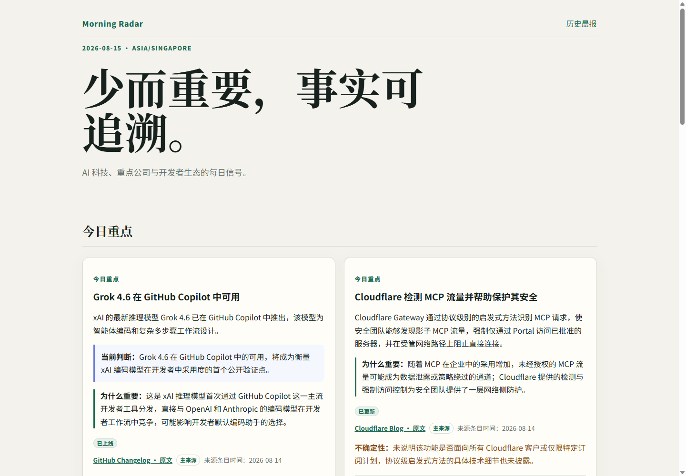
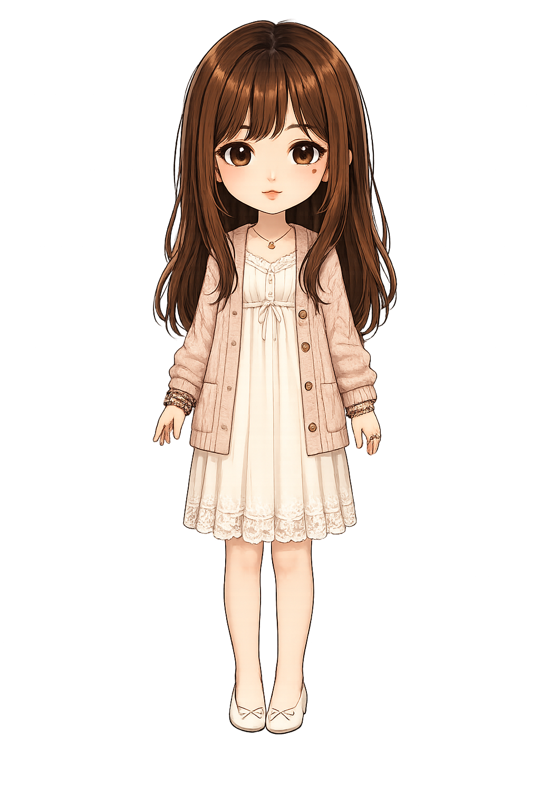
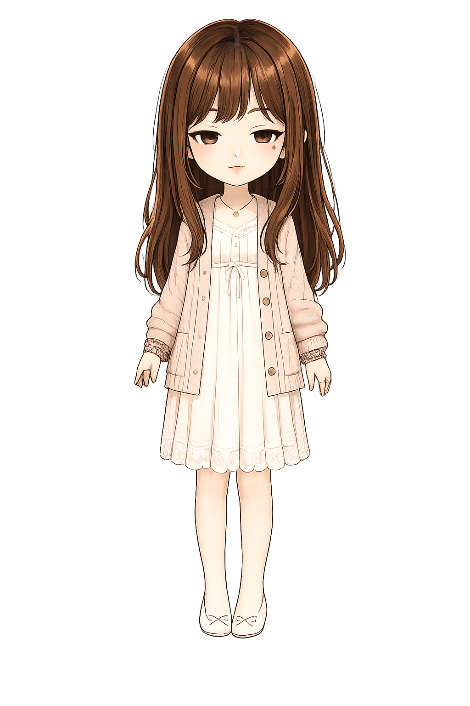
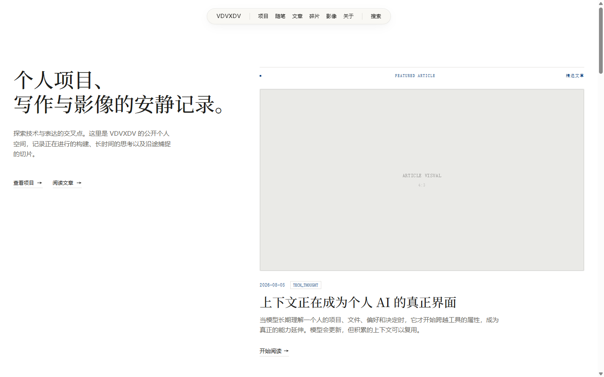

Work in progress.
记录正在生长的想法、原型与实验，以及它们在时间中的演变。
这里是结构化信号的切片档案。

State: IDLE





FLIP ↵
read-only inspect
→
bounded proposal
→
user approval
→ scoped change → reconnect verification
→ scoped change → reconnect verification
A bounded toolkit to safely diagnose and propose scoped configurations for Codex Desktop connection issues under local proxy environments, requiring explicit user approval for any state modification.
# Sanitized trace. Values hidden.
[OP] CHECK relevant proxy configuration (values hidden)
[OP] PREVIEW proposed scoped change
[WAIT] explicit approval
[EXEC] APPLY only approved change
[OP] VERIFY reconnect
[FALLBACK] ROLLBACK on failure
[OP] PREVIEW proposed scoped change
[WAIT] explicit approval
[EXEC] APPLY only approved change
[OP] VERIFY reconnect
[FALLBACK] ROLLBACK on failure
PROTOTYPE-ONLY / Reconstructed
Target: stdout manipulation & state logic.
Score: 12400 Level: 4
+------------------+
| . . . . . . |
| . . . . . . |
| . . [][] . . |
| . . [][] . . |
| . . . . . . |
| [][] . . . . |
| [][] . . [][] |
| [][][][] . [][] |
+------------------+
ESP32 LED Traces
// Setup
const int ledPin = 25;
pinMode(ledPin, OUTPUT);
Serial.begin(115200);
const int ledPin = 25;
pinMode(ledPin, OUTPUT);
Serial.begin(115200);
// Digital Blink
digitalWrite(ledPin, HIGH);
delay(1000);
digitalWrite(ledPin, LOW);
digitalWrite(ledPin, HIGH);
delay(1000);
digitalWrite(ledPin, LOW);
// PWM Breathing
for(int i=0; i<255; i++) {
analogWrite(ledPin, i);
delay(10);
}
for(int i=0; i<255; i++) {
analogWrite(ledPin, i);
delay(10);
}